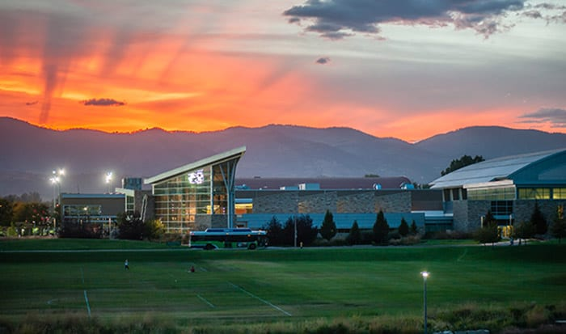
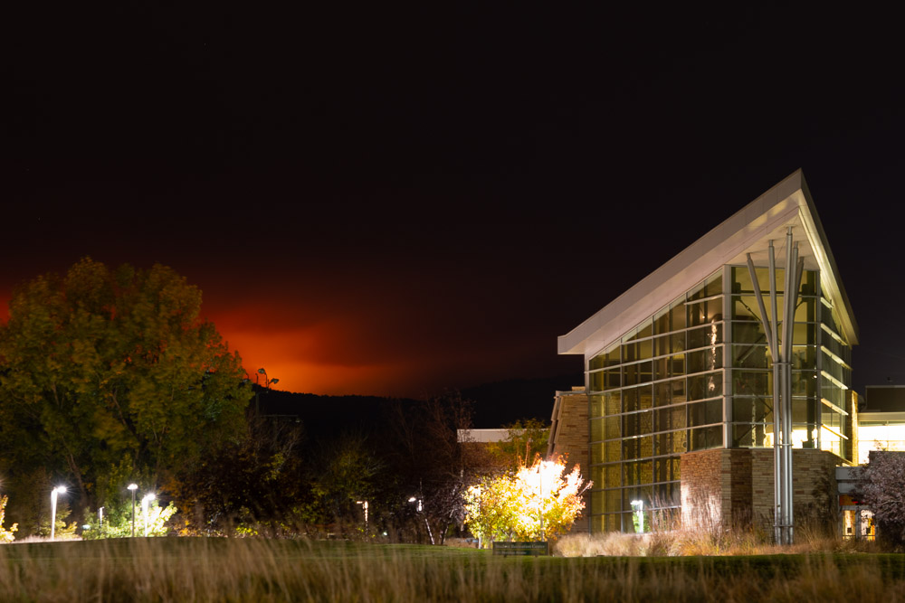
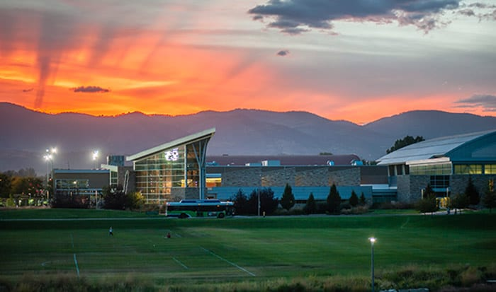
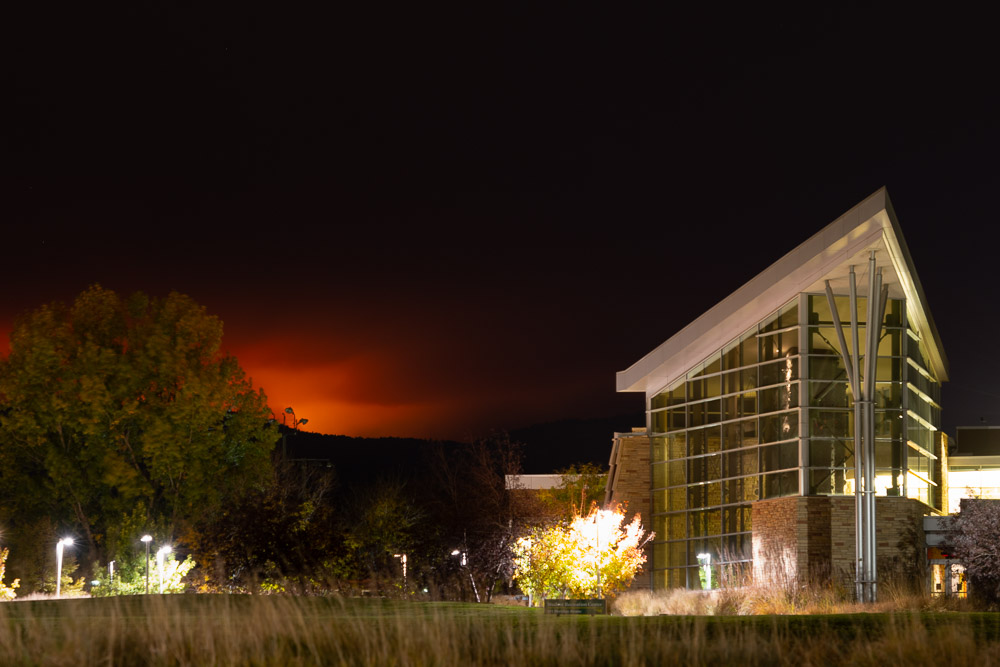

Colorado — AQSHning g‘arbiy qismida joylashgan tog‘li shtat. U 1876-yil
1-avgustda AQSHga 38-shtat sifatida qo‘shilgan. AQSH mustaqilligining 100
yilligi sharafiga “Centennial State” (Yubiley Shtati) deb ataladi.
Geografik joylashuvi:
Shimolda: Wyoming va Nebraska Sharqda: Kansas Janubda: New Mexico va
Oklahoma G‘arbda: Utah
Colorado shtatining katta qismi Rocky Mountains (Qoya Tog‘lari) bilan
qoplangan. Hududda baland tog‘lar, vodiylar, o‘rmonlar va plato mavjud.
Iqtisodiyoti:
Colorado iqtisodiyoti turli sohalarga asoslangan: Turizm, qishloq
xo‘jaligi, energetika, kosmos va mudofaa, texnologiyalar. Tog‘li hududlar
ko‘pligi sababli, shtat chang‘i kurortlari va tabiat turizmi bilan
mashhur. Neft, gaz, ko‘mir va yangilanuvchi energiya manbalari ishlab
chiqariladi. Denver — moliyaviy va texnologik markaz hisoblanadi.
Diqqatga sazovor joylari:
Rocky Mountain National Park — baland tog‘lar, muzliklar, sayr va tabiatni
kuzatish joyi Pikes Peak — mashhur tog‘ cho‘qqisi Garden of the Gods —
tabiiy tosh yodgorliklar Mesa Verde National Park — qadimiy tubjoy
aholining tosh uylari Aspen & Vail — dunyoga mashhur chang‘i kurortlari
Madaniyat:
Colorado madaniyati tabiat, sog‘lom turmush tarzi, va sport atrofida
shakllangan. Denver va Boulder shaharlari san’at, musiqa va ilm-fan
markazlari hisoblanadi. Colorado, ayni vaqtda, AQSHda qonuniy marixuana
ishlab chiqarish va eksport qilishga ruxsat berilgan ilk shtatlardan biri.
 


